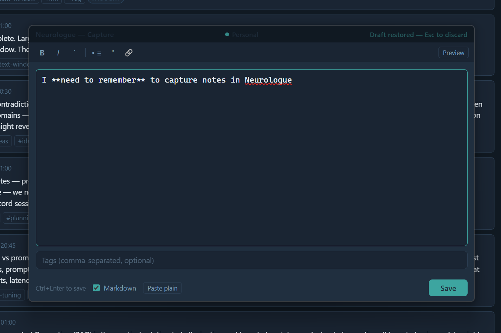

Capture
Capture any thought in under two seconds, without leaving what you're doing.

Global hotkey
Press Ctrl+Shift+Space from anywhere on your desktop — even when Neurologue is in the background or minimised. A small floating popup appears instantly on top of your current window.
The hotkey is registered globally when Neurologue is running. You don't need to switch to the app first.
The default hotkey is Ctrl+Shift+Space. You can change it in Settings → Capture hotkey. See the Library — Capture hotkey section for instructions.
The capture popup
The popup is a compact 560×260px window with two fields and optional Markdown support:
| Field | Description |
|---|---|
| Content | The main text area. Accepts multi-line input. Spellcheck is enabled. This field is automatically focused when the popup opens. |
| Tags | Optional comma-separated tags, e.g. work, ideas, todo. Whitespace around each tag is trimmed automatically. If Ollama is running, a Suggest tags button appears after you type your content — click it to get LLM-generated tag suggestions, then click any suggestion to add it. |
Markdown mode
Tick the Markdown checkbox in the footer to enable Markdown formatting. A formatting toolbar appears with shortcuts for common syntax.
| Toolbar button | Inserts |
|---|---|
| B | **bold text** |
| I | *italic text* |
` | `inline code` |
| • ≡ | - prefix on selected lines (bullet list) |
| " | > prefix (blockquote) |
| 🔗 | [link text](https://) |
Click Preview in the toolbar to toggle a rendered preview of your Markdown. The raw text is always what gets saved — the preview is for reference only.
Markdown tokens are stored verbatim in the database. The semantic embedding is generated from the raw Markdown text, which means formatting characters (**, # etc.) have minimal impact on search relevance.
Paste plain text
Click Paste plain in the footer to toggle paste-without-formatting mode. When active, any paste into the content or tags field strips rich text and HTML — only the plain text value is inserted. Useful when copying from browsers or Word documents.
Keyboard shortcuts
| Shortcut | Action |
|---|---|
| Ctrl+Shift+Space | Open the capture popup (global) |
| Ctrl+Enter | Save the entry and close the popup |
| Escape | Dismiss the popup without saving |
| Ctrl+B | Bold (Markdown mode only) |
| Ctrl+I | Italic (Markdown mode only) |
The popup also closes automatically if you click anywhere outside it.
What gets saved
Each captured entry is stored with the following metadata automatically:
| Field | Value |
|---|---|
content | Your text |
tags | Parsed from the tags field |
source | manual |
type | note |
created_at | Current timestamp (UTC) |
After capture
Once saved, the entry appears immediately in your Library. The background worker will pick it up within 10 seconds, generate a vector embedding, and auto-classify it into a category (Task, Thought, Reminder, Idea, Question, or Decision). You don't need to do anything — this happens silently.
Ollama must be running for embeddings to be generated. If Ollama isn't available, the entry is still saved and will be embedded the next time Ollama is running and the worker picks it up.
Tips for good entries
- Write naturally — semantic search works on meaning, not keywords, so there's no need to craft perfectly worded entries.
- Tags are optional but useful for quick filtering. Use them for categories (
work,health) or status (todo,idea). - Short fragments and half-formed thoughts are fine. The system clusters similar entries into themes, so even brief notes contribute to patterns over time.